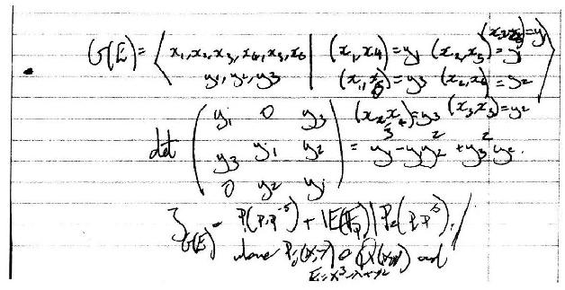
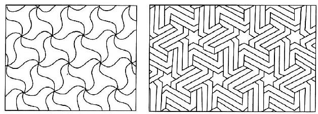

马库斯·杜·索托伊
我是数学家而不是哲学家。我的工作是证明新的定理，发现我们计数领域中新的真理，创建新的对称性，以及寻找不同数学领域之间的新的联系。
然而我的工作描述中包含了一大堆足以引出一些重要问题的词汇。这些问题包括：数学是什么，它是如何与我们生活的物质世界和精神世界发生联系的，等等。这些语词有“创建”“发现”“证明”和“真理”等，都是些非常动人的语词。每个数学家都会认识到自己在某些时候会考虑，他们刚刚做出的新的数学突破是一种创造还是一种发现。数学是一种客观活动还是一种主观活动？数学对象存在吗？
在我看来，解决这些问题的唯一方法是对我在做数学研究时我所想的东西进行分析。所以，我从我的工作经历中选取一个片段来分析，这有助于我探索其中的一些问题（关于这类发现的更多细节可参见du Sautoy，2009）。
作为数学家，我最自豪的时刻就是构建了一种新的对称元，其子群结构与椭圆曲线模p解的数目计算相关。寻找椭圆曲线的解是数学领域最棘手的问题之一。所谓椭圆曲线，就是满足如y2=x3-x这样的方程（或更一般地，y的二次方等于x的立方）的曲线。克莱数学研究所提出过一个悬赏100万美元奖金的问题，称为伯奇和斯温纳顿—戴尔猜想（Birch and Swinnerton—Dyer Conjecture），目标就是理解什么情况下这些方程有无穷多个解，其中x和y都是分数。

图2.1我的笔记本里记载的一种新的对称元的构建
我构建了这种对称的对象，其结构可以为方程组求解这样的重要问题进行编码，当时波恩的马克斯·普朗克研究所正在进行这方面的工作。我与德国同事证明了的一个数学定理表明，可能存在这种对称元，但在展现这种联系的对称群被构造出来之前，它都可能只是一种错觉。坐在波恩的办公室里的那个晚上称得上是数学家常讲的关键时刻之一，当时我头脑中突然灵感闪现，我急忙在黄色拍纸簿上写下这些新对象彼此间相互作用的对称性结构。这本拍纸簿便是我进行数学沉思的调色板。
感觉很重要。我花了几天时间来真正证明我的想法。一旦细节凸显出来，这个新对象便显示出对称性世界与此前从未显露的算术几何世界之间的联系。
当然，当我说我构造了这个对称的对象时，我不是从物理上构建了它。它是那种只有生活在数学的抽象世界里的心灵方能感知的对象。我既不同于第一个雕刻出有20个三角形面的正二十面体的人，也不同于第一个发现一种新的铺设方式用对称瓷砖铺满格拉纳达的阿罕布拉宫[15]墙面的摩尔人艺术家。我所发现的对象的物理表示只存在于一些高维空间。即便如此，这些表示也仅仅是对基本对称群的表达。正二十面体（参见本书第191页图）和正十二面体的旋转对称性只是这种称为A5基本对称群的两个例子。同样，在阿罕布拉宫发现的这两种设计，虽然物理上非常不同，但在基本对称群下是相同的。
正如数字“3”是由含三个对象（3个苹果或是3只袋鼠）的集合的共性抽象而来一样，对称性632的命名是对阿罕布拉宫的这两面墙所具有的对称性的共性的一种抽象。抽象对称群由每一种对称性的名字来描述。当你一个接一个地研究了对称性后，你就知道怎么去解释这些对称性之间的相互作用关系了。
在波恩的那个晚上，我“构建”的就是这样一种抽象对称的对象，其对称性相互作用的结果是产生出一种与椭圆曲线之间有趣的新联系。它肯定不会在现实世界中存在，然而，如果你在数学世界里花上足够的时间，你就可以得到一种类似于处理正十二面体或在阿罕布拉宫铺墙那样的实体。

图2.2阿罕布拉宫（Alhambra）两堵墙上铺设的花纹，这种称为632的对称性属于同一个对称群
在描述上述情节时我一直小心地避免使用“创造”这个词。我不得不控制自己别写错字。因为构建这个新的对称群确实像一种创造行为。我体验到一种强烈的责任感——我在黄色拍纸簿上写下的文字正在让某件新东西从无到有，而这件东西在我勾勒出它的轮廓之前并不存在。正是通过我的想象才有了这件东西。它需要借助我这个中介才能来到世上。它不是那种没有我的存在也可以自然演化出来的东西。我给了它生命的动力。
许多数学家都谈论过数学的创造力。正是这种创造力吸引我从事数学而不是其他学科的研究。我觉得其他学科的研究更多的是需要观察。我在求学的年龄对音乐很感兴趣。我学习小号，喜欢戏剧，喜欢读书。科学不曾真正抓住过我的想象。但在13岁那年，一次数学课后老师把我留了下来：“我想你会明白真正的数学是什么。数学不是我们在课堂上背的乘法口诀表和长长的除法。它要比这些更令人兴奋。我想你一定喜欢看到它更广阔的景象。”他给了我一些书，他认为我会对它们感兴趣，领略到数学世界所展现的各种风采。
其中一本书是G.H.哈代写的《一个数学家的辩白》（1940年初版）[16]。这本书对我有很大的影响。读哈代的书让我明白，数学与创造性的艺术有许多共同之处。它与我喜欢做的事情——语言、音乐、阅读等——似乎是相通的。哈代自己就是这样的一个例子。他是这样来描写数学家的：“数学家和画家或诗人一样，都是模式的创造者。如果说他的模式比其他人的更永久，那是因为他的模式是用概念建构的。”随后他写道：“数学家的模式，像画家的或诗人的模式一样，必须是美的；他的概念，就像颜色或语言，必须以和谐的方式构成。美是这种模式的第一个检验：丑陋的数学在世界上不会持久。”在哈代看来，数学是一种创造性艺术而不是有用的科学。“‘真正的’数学家的‘真正的’数学，譬如像费马、欧拉、高斯、阿贝尔和黎曼的数学，几乎是完全‘无用的’（‘纯’数学的‘应用’真就是这样）。基于数学家工作的‘效用’来评判一个真正的专业数学家的职业生命是不可能的。”
我的对称群性的构建确实不是出于实用的目的。它是体现我的审美意识的一种创造。它是那么令人惊奇，那么出人意料。就像一首乐曲的主题，在证明过程中它突变成一种完全不同的东西。我想，促使我构建这个对称群的一部分动力正是因为它在数学上具有某种实用性。它有可能最终帮助我们更好地理解椭圆曲线。它为我们认识p—群分类的复杂性提供了新的视角。但我仍然认为这种创造性的行为不是那些超出我的控制力范围的外部因素硬强加的结果。
然而……这是不是说数学对象只是待在那里等着别人来发现它呢？是不是我在波恩的那一刻只是一种发现行为呢？也就是说，如果我没发现它，最终也会有别人来得到相同的结果呢？我不过是在数学园地里瞎刨，凑巧发现了这种对称的对象？是不是说它一直在那儿，等着人来揭示？为什么这种发现与科学家首次发现金这种元素或是天文学家首次发现海王星有很大的不同？
关于这些问题，哈代在他关于数学的创造力的一篇演讲中给出了完全不同的思想表达：“我相信，数学实在在我们之外，我们的功用是发现或观察它。我们证明的定理和那些我们夸大其词地当作‘创造’所描述的东西只不过是我们对观察的记录。”这里我妄加归结一下数学家与其成果的关系，我认为所有数学家们都是这么看待他们的工作的：任何创造性的会计运算都不可能使一个素数被整除。正如哈代宣告的：“317是一个素数，不是因为我们这么认为，也不是因为我们的思想经过这样或那样的改造，而是因为它就是这样存在的，是因为数学实在就是这样被构建的。”
发现新的对称群与发现一种新元素或发现一颗新的行星之间也许有一点是不同的：因为黄金和海王星是自然演变的，不需要我们介入。但我还是觉得，如果我没有发现这个对称群，那么一定会有别人将它构建出来。在多大程度上它是我的想象的产物呢？历史上不乏这样的记录：数学对象被不同的数学家以彼此独立的方式同时发现。最有名的当属高斯、鲍耶和罗巴切夫斯基对非欧几何学的发现。虽然他们所使用的符号、说明和解释可能各具特色，但他们发现的对象——一种具有三角形的内角和小于180°性质的几何——是一样的。
相反，人们无法想象三位作曲家会同时创作出《死亡与少女》弦乐四重奏。这个作品是舒伯特天才的杰作，诞生自非欧几何首次面世的同一时期。然而，尽管音乐本身是独一无二的，其他作曲家也永远不可能创作出完全同样的作品，但音乐表现出的这种情绪和变化却完全可以在其他艺术形式上被独立地、同时地表现出来。不同的作曲家经常在相同的时间段里发现新的创作方式、新的曲式结构和新的可能性。舒伯特这曲四重奏标志着音乐创作上浪漫主义时期的开端。但他不是探索狂飙突进[17]时期那种强调变幻不息的键盘曲式概念和强烈对比手法的唯一的一个。我共事过的当代作曲家都谈到过发现某种概念所带来的那种打击，就好像不同的作曲家在创作作品时都发现了同样的新结构、新形式。
也许我可以提出建议来说明我在做数学研究时对创造力的感觉。在波恩的那个晚上，我原本可以在黄色拍纸簿上写下很多不同的对称群。事实上，这样的对称群有无穷多个。我要做的就是写下这些对称群的名称，并定义它们是如何相互作用的……瞧……我已经创建/发现了一个新的群。尽管会出现这些对称群以前是否被构建过的问题，但我更感兴趣的是为什么那晚我构建了特定的对称群后我会那么兴奋。
我认为将自己比作作曲家和作家是有帮助的。我可以在五线谱上随意写下记谱号，给出不同长度、不同强弱变化的音符，我会谱写一首乐曲。或者，我可以坐在打字机前，打出一连串字母或单词，写出一本书。博尔赫斯的《巴别图书馆》[18]包含的每一本书都是由25个字符组合写成的，每本书都是410页，每页40行，每行80个字符。当然，这个图书馆里有海量的书籍，准确地说有251312000本。
它们都待在那里等待着某位作者去发现。《远大前程》在查尔斯·狄更斯取下它之前早就已经在那儿了。所谓创造性的行为就是从所有可能的书中抽出这本书来写。我认为，数学研究同样是这种情形，只不过我们经常忽视这一点而已。
我可以无止境地写下新的和原有的定理。我可以建立无限多个新的对称群。我可以通过电脑运用以前陈述的每个语句的逻辑推理规则将这些对称群一个个地复制出来。它们都具有客观的真实性。所有这些在数学上都是真实的陈述。但问题是，就像人们对巴别图书馆里的大多数书籍不感兴趣一样，这些新的定理同样是平庸的，人们不感兴趣。
能产生数学真理的东西还有很多。在数学家看来，艺术就是一种可用于挑选逻辑途径的准则。这里，我认为美感在作出这些选择的过程中扮演着重要角色。我想告诉大家，我发现这种新对称群的原因说起来令人惊讶。它就像小说中的某个时刻，当你认为主角该是这样行事时他却突然变成另一种完全不同的行事风格。
也许数学和其他科学之间的区别就在于我们生活在这样一种自然世界里，它充当着代理角色，挑选出那些具有特定性质的东西，而正是这种特殊性使我们——作为科学家——试图理解为什么它们如此特殊并被挑选出。通常情况下，能给出答案的最终只能是数学。
我很赞同本书其他地方所提出的建议：人们经常是在看到由数学得到的结果比运用它之前更丰富时才体会到它的价值。对称群的定义看起来很简单。人们很难相信会由它导致像大魔群和E8这样的奇异对象的发现。
文化和历史背景也会对不同的数学发现的认可并为之激动产生影响。每个21世纪的数学家都会关心黎曼zeta函数是否有一个零点不在临界线上。相比之下，关于是否存在奇完全数的问题虽然也是个令人印象深刻的数学问题，但我不认为21世纪的数学家会关心这个问题。这也就是现在没人真正努力要去证明这一事实的缘故。与此相反，如果这个问题放在古希腊人那里，那将是一个令人激动的发现。对它的证明自然也会产生关于数的令人兴奋的新的数学见解。现在是否真有人关心费马方程xn+yn=zn是否有整数解？可以确信，不会有多少定理是建立在“假设费马大定理为真，那么……”基础上的。但为什么数学界一直在追求这个定理的证明呢？是因为它能催化某些惊人设想的发现。
人可能会通过宣称“数学发现的是宇宙的永恒真理”来对数学和艺术创作做出区别。我无法让一个定理为真恰恰是因为我认为它应该是美的。如果黎曼假设被证明是假的，那么我们对素数布局是多么漂亮的信念就将被打破。但对此我们无能为力。黎曼假设可能为真也可能是假的，对此创造性思维无法改变。相反，人们不会谈论《死亡与少女》或《远大前程》的客观真理性。因为从一开始，这些作品就引发了观众的多种反应。歧义是艺术创作的一个重要组成部分。但歧义对于数学家来说则是灾难。数学研究中的创造性行为集中到一点：就是提出黎曼假设是否为真这个问题。关于素数我们可以提很多问题，但为什么这个问题非常重要，同样是因为它提出了素数研究中一个非常特殊的问题。当你第一次了解到素数与黎曼zeta函数的零点之间的联系时，会不禁感到喜出望外。这正是一种不寻常的转换。
数学发现的另一个关键是如何整合发现所跨越的主题。这种整合对于数学价值的判断往往是很重要的。那种从主流数学来看似乎孤立的数学发现，尽管令人惊讶或很美，通常可能不会像与其他主题有联系的数学发现那样受到同样的重视。黎曼假设与数学的其他分支有着如此众多的相互关联，这个事实本身就是数学的价值体现的原因之一。这与互联网相似：一个问题的联系越广泛，它在Google的数学问题排名榜上就越靠前。
也许音乐和文学创作在隔绝状态下反而可以做得更好，虽然经常是人们只在它与此前已有作品的联系中才能真正欣赏这些作品。
人们在证明黎曼假设的研究中提出了一个有趣的问题：证明一个猜想与构建新的数学对象之间是否有区别。当然，构建用于确立黎曼假设是否正确的证明所涉及的创造性与构建新的非欧几何的创造性是匹配的。但是这个过程确实存在差异。这有点像探险家。黎曼指出在遥远的地方有一座山，而那些试图证明黎曼假设的人则试图在数学园地里找到一些路径以便到达这座山。鲍耶对非欧几何的发现就像一位探索者在海洋中遇到一个以前从未见过的新的岛屿。
“数学对象是否真的存在”这个问题又如何呢？我在内心里当然是一个柏拉图主义者。有一些东西确实独立于我们的存在或我们对其想象而存在那里。素数、单群、椭圆曲线，均是这样的一种存在，而不是哪位数学家制造了它们。但后来也许我正在回到这样一种感觉：我的对称群只是对一直在那里的数学实体的一种表达。我觉得我很赞同克罗内克的说法：“上帝创造了整数，其余都是人的工作。”但这并不是说，黎曼假设的真假也是某个男人或女人提出的。正是要么是真要么是假，才使得素数按黎曼假设所预言的那样分布。但做出攻坚这个数学问题而不是其他假设这一决定的则是我们这些男人或女人。同样，我认为，数学家的作用是论述整数的具体性质，并指明那些真正令其他数学家感兴趣的和令人惊奇的特性。我认为，在挑选大的数学问题时需要用到审美判断，就像音乐家在创作伟大作品时需要审美判断一样。数学的实用性对数学家的研究几乎不起激励作用。数学发现最终被应用到现实世界中往往是几个世纪之后的事情了。相反，数学家被吸引到数学上来，是因为数学充满了优美、典雅和惊喜。在数学24证明里，主题被确立后才有变异、交织和产生令人惊讶的联系的那一刻。在我看来，这些特质既可以创作出令人振奋的音乐，也可以带来令人兴奋的数学论证。
对数学家来说，证明的过程，无论是首次踏出一条前人未知的路径，还是跟随别人的脚步前行，都反映了数学的本质。这种本质不是被证明了的、干干净净的定理的陈述所能反映出来的。例如，费马发现存在这样一个惊人的事实：除以4的余数为1的每一个素数总是可以写成两个平方数之和。譬如41是一个素数，它除以4的余数显然为1。费马大定理保证这个素数可以写成两个平方数的和，对于本例就是25+16或5的平方加4的平方。
在数学家看来，这个定理是令人兴奋的，因为它连接两个不同种类的数：质数和平方数。但数学家的真正快乐在于找到一种证明方法来证明为什么会存在这种联系。当你突然看出素数和平方数之间为什么会有这种共同性时，你的心头就会为之一震。它们就像是一个共同主题的两种不同的变化。
如同人们开始量化研究是什么构成了优美的音乐（研究者试图绘制出音乐的不同特征）一样，我们有可能借助一些方法来判断为什么我们会给一些证明了的数学定理以大奖，并公之于《数学年鉴》刊物，而对另一些证明则不感兴趣。这跟证明的复杂性有关吗？有时确实有关，虽然简单性往往是数学家的一盏指路明灯。四色问题的证明是复杂的，但不漂亮，因为在你突然明白为什么给地图着色是四色而不是五色就够了的过程中它不能提供那种相当神奇的“啊，哈”一刻。费马大定理的证明相当的复杂（肯定不像费马说的在菜单边页上写不下的那种），使得阅读它的数学家被其中的概念搞得晕头转向，就像一出宏大的瓦格纳歌剧达到大结局的那一幕，但只有这样你才能体味到什么是怀尔斯引领下的不可避免的旅程。第三种测度数学价值的方法是看所证明的结果与其他数学结果之间的统一性，数学的Google评级即是这样的一种方法。
但试图定量刻画什么是好的数学是注定要失败的，就像我们无法用测量来评价为什么莫扎特的音乐是如此神奇一样。哈代在《一个数学家的辩白》里这样写道：“很难定义什么是数学之美，但这种美同其他形式的美一样真实——我们可能不知道一首优美的诗的确切意思是什么，但这并不妨碍我们从阅读中获得美的享受。”
我常常觉得，有关创造/发现的问题与那种关于先天的还是后天培养的争论有共同之处。一个孩子到底多大程度上可归因于基因的遗传呢？在孩子的成长和性格塑造方面环境的影响是否更大呢？数学家发现的定理就是他们的孩子，他们的遗产。一个定理的诞生往往是长期辛勤劳动的结晶。它们的存在是我们继承传统的一种方式。对它们的证明的持久性使我们有机会变得不朽。但这些定理难道就像遗传代码决定了其性状和存在方式一样只是我们工作所用的逻辑框架的结果吗？或者说，我们对所创建的这些定理的培育只是文化——我们身处其中的数学环境——的一种功能？对于那些喜欢非黑即白，要么对要么错，要么证明要么证伪，很少考虑到第三种可能的数学家来说，这不是一个非常令人满意的答复。但也许这就是为什么所有这些哲学沉思进行到最后，数学家往往还是扭头回到自己的数学园地，继续在这片绚丽的风景里跋涉——证明新的定理，构建新的数学结构，陶醉在其不变的确定性中。这就是数学家的工作。
马克·施泰纳
马库斯·杜·索托伊教授用一种简单但有效的区分调和了数学哲学上的实在论和建构主义的立场。可用数学语言描述的结构是一种独立于我们知识的存在，这是实在论的观点。数学家从这些结构中挑选出那些所谓数学结构。但能够用数学语言描述的未必一定就是数学结构。杜·索托伊教授补充道，美学因素在决定什么是值得探讨的——即所谓数学究竟是什么——方面发挥着主导作用。这也正是我在我的《作为哲学问题的数学适用性》（1998年出版）一书中所采取的立场。我的观点是，从支配数学研究的人类中心论判别标准（一如美学标准）上看，数学是符合人类中心论的立场的。
杜·索托伊以赞许的态度引用的哈代的观点——优美的数学从来不是“有用的”——到底要告诉我们什么呢？我看不出杜·索托伊教授有什么理由接受一种明显错误的观点，可能主要是基于一厢情愿的想法。（哈代不想让数学用于战争。）相反，哈代这么说可以说是大错特错，因为许多科学家相信，数学越优美，它的应用就越广泛。哈代写道：“没人会知道数论或相对论会用于战争目的，似乎不太可能会一做这么多年。”虽然说爱因斯坦发明了原子弹的观点是荒唐可笑的，但另一方面说质量与能量的等价关系决不会用于战争目的同样是荒唐可笑的。至于数论，据我所知，该领域的大部分工作是简单的分类，因为它可以并且已经被用于密码学。如果有人想出了一种很好的大数算法，他很可能会被逮捕。
我向杜·索托伊教授提出这样一个问题：你能解释一下为什么优美的数学往往在应用上都非常有用？